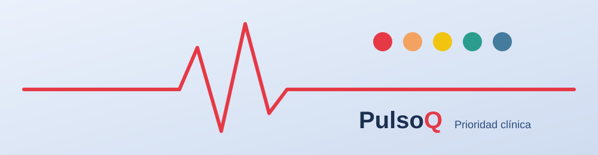

PulsoQ es un sistema web de triage digital que permite al personal de urgencias capturar signos vitales, asignar un nivel de prioridad a cada paciente y consultar en tiempo real quién debe ser atendido primero.
Conoce cómo PulsoQ puede ordenar y agilizar tu sala de urgencias.
¿Qué gana tu hospital con PulsoQ?
Clasificar pacientes a mano consume tiempo y deja espacio para errores. PulsoQ automatiza la priorización para que los casos críticos se atiendan primero.
- Clasificación más rápida: el registro del paciente toma solo unos minutos.
- Prioridad por colores: cada caso se identifica visualmente según su gravedad.
- Equipo coordinado: médicos y enfermería consultan la misma fila actualizada.
- Registros consultables: la información queda guardada para seguimiento y reportes.